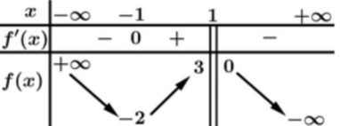
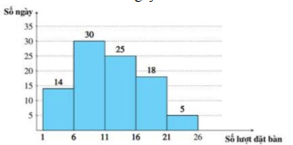
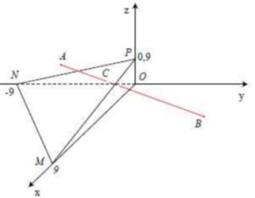
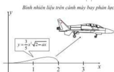
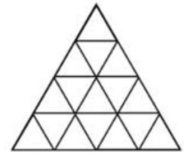
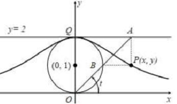

ĐỀ THI TOÁN - ĐỀ SỐ 51 HOT
Phần I: Trắc Nghiệm Nhiều Lựa Chọn
Tóm tắt kiến thức: Tính đơn điệu của hàm số
Hàm số \( f(x) \) nghịch biến trên khoảng \( (a; b) \) nếu \( f'(x) \leq 0 \). Bảng biến thiên cho biết dấu của \( f'(x) \), từ đó xác định các khoảng nghịch biến.
Câu 1:
Cho hàm số \( y = f(x) \) có bảng biến thiên như sau:

Hàm số đã cho nghịch biến trên khoảng nào dưới đây?
Chọn đáp án:
Lời giải:
Từ bảng biến thiên, suy ra hàm số đã cho nghịch biến trên khoảng \( (1; 2) \).
Đáp án: D.
Tóm tắt kiến thức: Vector chỉ phương trong không gian
Trong không gian \( Oxyz \), trục tọa độ \( Oy \) có vector chỉ phương là \( (0; 1; 0) \).
Câu 2:
Trong không gian \( Oxyz \), trục tọa độ \( Oy \) có một vector chỉ phương là:
Chọn đáp án:
Lời giải:
Trong không gian \( Oxyz \), trục tọa độ \( Oy \) có một vector chỉ phương là \( \vec{u}_2 = (0; 1; 0) \).
Đáp án: B.
Tóm tắt kiến thức: Logarit
Đối với \( a > 0, a \neq 1 \), ta có \( \log_a a = 1 \) và \( \log_a a^n = n \).
Câu 3:
Với \( a > 0, a \neq 1 \), giá trị của \( \log_a a^3 \) bằng:
Chọn đáp án:
Lời giải:
Ta có: \( \log_a a^3 = \frac{1}{\log_a a^3} = \frac{1}{3 \log_a a} = \frac{1}{3} \).
Đáp án: C.
Tóm tắt kiến thức: Nguyên hàm
Nguyên hàm của hàm hằng \( f(x) = c \) là \( \int c \, dx = cx + C \).
Câu 4:
Tìm họ nguyên hàm của hàm số \( f(x) = \pi^4 \):
Chọn đáp án:
Lời giải:
Ta có: \( \int f(x) \, dx = \int \pi^4 \, dx = \pi^4 x + C \).
Đáp án: D.
Tóm tắt kiến thức: Quan hệ vuông góc trong không gian
Một đường thẳng vuông góc với mặt phẳng nếu nó vuông góc với hai đường thẳng cắt nhau nằm trong mặt phẳng đó.
Câu 5:
Cho hình chóp \( S.ABCD \) có đáy \( ABCD \) là hình chữ nhật và \( SA \perp (ABCD) \). Đường thẳng nào sau đây vuông góc với mặt phẳng \( (SAD) \)?
Chọn đáp án:
Lời giải:
Ta có: \( SA \perp (ABCD) \Rightarrow SA \perp CD \).
Lại có: \( CD \perp AD \).
Mà \( SA, AD \subset (SAD) \).
\( \Rightarrow CD \perp (SAD) \).
Đáp án: D.
Tóm tắt kiến thức: Cấp số cộng
Cấp số cộng \( (u_n) \) có công sai \( d \), công thức: \( u_n = u_1 + (n-1)d \).
Câu 6:
Cấp số cộng \( (u_n) \) có \( u_2 = 10 \), \( u_4 = 6 \). Công sai của cấp số cộng \( (u_n) \) bằng:
Chọn đáp án:
Lời giải:
Ta có: \( u_2 = 10 = u_1 + d \Rightarrow u_1 = 10 - d \).
\( u_4 = 6 = u_1 + 3d \Rightarrow 6 = 10 - d + 3d \Rightarrow 2d = -4 \Rightarrow d = -2 \).
Đáp án: B.
Tóm tắt kiến thức: Khoảng cách trong không gian
Khoảng cách từ điểm \( M(x_0; y_0; z_0) \) đến mặt phẳng \( ax + by + cz + d = 0 \): \[ d = \frac{|ax_0 + by_0 + cz_0 + d|}{\sqrt{a^2 + b^2 + c^2}} \].
Câu 7:
Trong không gian \( Oxyz \), khoảng cách từ điểm \( A(1; -2; 1) \) đến mặt phẳng \( (P): 2x - 2y - z + 1 = 0 \) bằng:
Chọn đáp án:
Lời giải:
Áp dụng công thức tính khoảng cách điểm đến mặt phẳng:
\( d(A, (P)) = \frac{|2 \cdot 1 - 2 \cdot (-2) - 1 + 1|}{\sqrt{2^2 + (-2)^2 + (-1)^2}} = \frac{6}{3} = 2 \).
Đáp án: A.
Tóm tắt kiến thức: Tích phân
Tích phân của hàm \( a^x \): \( \int a^x \, dx = \frac{a^x}{\ln a} + C \).
Câu 8:
Tích phân \( I = \int_0^1 \frac{3^x}{2} \, dx \) có giá trị bằng:
Chọn đáp án:
Lời giải:
Ta có: \( I = \int_0^1 \frac{3^x}{2} \, dx = \frac{1}{2} \int_0^1 3^x \, dx = \frac{1}{2} \cdot \frac{3^x}{\ln 3} \big|_0^1 = \frac{3}{2 \ln 3} - \frac{1}{2 \ln 3} = \frac{1}{\ln 3} \).
Đáp án: B.
Tóm tắt kiến thức: Cực trị của hàm số
Điểm cực đại của hàm số \( f(x) \) xảy ra khi \( f'(x) = 0 \) và \( f'(x) \) đổi dấu từ dương sang âm tại điểm đó.
Câu 9:
Cho hàm số \( f(x) \) có đạo hàm \( f'(x) = 3(x^2 - 1)(x + 2), \forall x \in \mathbb{R} \). Số điểm cực đại của hàm số đã cho là:
Chọn đáp án:
Lời giải:
Xét \( f'(x) = 3(x^2 - 1)(x + 2) = 0 \):
\( \Rightarrow \begin{cases} x = \pm 1 \\ x = -2 \end{cases} \).
Bảng xét dấu \( f'(x) \):

Từ bảng xét dấu, ta thấy hàm số có 1 điểm cực đại.
Đáp án: C.
Tóm tắt kiến thức: Vector trong hình học không gian
Trong hình học không gian, các đẳng thức vector được kiểm tra bằng cách chuyển về dạng tọa độ hoặc sử dụng các tính chất của hình học.
Câu 10:
Cho hình hộp \( ABCD.A'B'C'D' \) với tâm \( O \). Đẳng thức nào sau đây sai?
Chọn đáp án:
Lời giải:
Xét từng đẳng thức:
a) \( \overrightarrow{AB} + \overrightarrow{BC} + \overrightarrow{CC'} = \overrightarrow{AC'} \), và \( \overrightarrow{AD'} + \overrightarrow{D'O} + \overrightarrow{OC'} = \overrightarrow{AC'} \). Đúng.
b) \( \overrightarrow{AB} + \overrightarrow{AA'} = \overrightarrow{AB'} \), và \( \overrightarrow{AD} + \overrightarrow{DD'} = \overrightarrow{AD'} \). Sai vì \( \overrightarrow{AB'} \neq \overrightarrow{AD'} \).
c) \( \overrightarrow{AB} + \overrightarrow{BC'} + \overrightarrow{CD} + \overrightarrow{D'A} = \overrightarrow{0} \). Đúng vì tổng các vector khép kín bằng 0.
d) \( \overrightarrow{AB} + \overrightarrow{AD} + \overrightarrow{AA'} = \overrightarrow{AC} + \overrightarrow{AA'} = \overrightarrow{AC'} \). Đúng.
Đáp án: B.
Tóm tắt kiến thức: Thống kê
Độ dài khoảng tứ phân vị: \( \Delta Q = Q_3 - Q_1 \), trong đó \( Q_1 \) và \( Q_3 \) là các tứ phân vị của mẫu số liệu ghép nhóm.
Câu 11:
Biểu đồ dưới đây biểu diễn số lượt khách hàng đặt bàn qua hình thức trực tuyến mỗi ngày trong quý III năm 2024 của một nhà hàng:

| Số lượt đặt bàn | \([1; 6)\) | \([6; 11)\) | \([11; 16)\) | \([16; 21)\) | \([21; 26)\) |
|---|---|---|---|---|---|
| Số ngày | 14 | 30 | 25 | 18 | 5 |
Chọn đáp án:
Lời giải:
Ta có: \( Q_1 = 6 + \frac{\frac{92}{4} - 14}{30} \cdot (11 - 6) = 7.5 \).
\( Q_3 = 16 + \frac{\frac{3 \cdot 92}{4} - (14 + 30 + 25)}{18} \cdot (21 - 16) = 16 \).
\( \Delta Q = Q_3 - Q_1 = 16 - 7.5 = 8.5 \).
Đáp án: B.
Tóm tắt kiến thức: Phương trình mũ
Giải phương trình mũ bằng cách đưa về cùng cơ số hoặc sử dụng logarit.
Câu 12:
Gọi \( x_1, x_2 \) là các nghiệm của phương trình \( 2^{x-1} = 5^{x^2 - x} \). Tính \( M = 5^{x_1} + 5^{x_2} \):
Chọn đáp án:
Lời giải:
Ta có: \( 2^{x-1} = 5^{x^2 - x} \).
\( \Leftrightarrow (x - 1) \log_2 2 = x(x - 1) \).
\( \Leftrightarrow (x - 1)(\log_2 2 - x) = 0 \).
\( \Rightarrow \begin{cases} x - 1 = 0 \\ \log_5 2 - x = 0 \end{cases} \Rightarrow \begin{cases} x = 1 \\ x = \log_5 2 \end{cases} \).
\( \Rightarrow 5^{x_1} = 5 \), \( 5^{x_2} = 5^{\log_5 2} = 2 \).
\( \Rightarrow M = 5^{x_1} + 5^{x_2} = 5 + 2 = 7 \).
Đáp án: A.
Phần II: Trắc Nghiệm Đúng/Sai
Tóm tắt kiến thức: Hàm số logarit và hình học phẳng
Tập xác định của hàm \( \log_a f(x) \) là \( f(x) > 0 \). Đạo hàm: \( \left( \log_a f(x) \right)' = \frac{f'(x)}{f(x) \ln a} \). Diện tích tam giác được tính bằng công thức hoặc khoảng cách.
Câu 13:
Cho hàm số \( f(x) = \log_2 (x^2 - 4x + 5) \) có đồ thị là \( (C) \) và điểm cực trị của đồ thị là \( M \). Xét các phát biểu sau:
Chọn đáp án cho từng phát biểu:
a)
b)
c)
d)
Lời giải:
a) Đúng. ĐKXĐ: \( x^2 - 4x + 5 > 0 \), hay \( (x - 2)^2 + 1 > 0 \) (luôn đúng). Vậy \( D = \mathbb{R} \).
b) Sai. \( f'(x) = \frac{2x - 4}{(x^2 - 4x + 5) \ln 2} \).
c) Đúng. \( f'(x) = 0 \Rightarrow 2x - 4 = 0 \Rightarrow x = 2 \). \( f(2) = \log_2 (2^2 - 4 \cdot 2 + 5) = \log_2 1 = 0 \). Vậy \( M(2; 0) \).
d) Đúng. Phương trình hoành độ giao điểm: \( \log_2 (x^2 - 4x + 5) = 1 \Rightarrow x^2 - 4x + 3 = 0 \Rightarrow x = 1, x = 3 \). Vậy \( A(1; 1) \), \( B(3; 1) \).
Diện tích tam giác \( MAB \): \( S_{MAB} = \frac{1}{2} |(2 - 1)(1 - 1) - (3 - 1)(0 - 1)| = 1 \).
Đáp án: a) Đúng, b) Sai, c) Đúng, d) Đúng.
Tóm tắt kiến thức: Xác suất
Xác suất có điều kiện: \( P(A|B) = \frac{P(A \cap B)}{P(B)} \). Xác suất toàn phần: \( P(B) = P(A) \cdot P(B|A) + P(\overline{A}) \cdot P(B|\overline{A}) \).
Câu 14:
Hai nhà máy cùng sản xuất một loại linh kiện điện tử. Năng suất nhà máy hai gấp 3 lần năng suất nhà máy một. Tỷ lệ hỏng của nhà máy một và hai lần lượt là \( 0,1\% \) và \( 0,2\% \). Giả sử linh kiện bán ở Trung tâm chỉ do hai nhà máy này sản xuất. Mua 1 linh kiện ở Trung tâm. Gọi \( A \) là biến cố: "linh kiện điện hỏng". Xét các phát biểu sau:
Chọn đáp án cho từng phát biểu:
a)
b)
c)
d)
Lời giải:
Gọi \( B \): linh kiện do nhà máy II sản xuất; \( \overline{B} \): linh kiện do nhà máy I sản xuất.
a) Sai. \( P(B) = \frac{3}{1 + 3} = \frac{3}{4} \).
b) Sai. Dữ kiện: \( P(A|B) = 0.001 \), \( P(A|\overline{B}) = 0.002 \). Không đủ thông tin để tính \( P(B|\overline{A}) \).
c) Đúng. \( P(A) = P(B) \cdot P(A|B) + P(\overline{B}) \cdot P(A|\overline{B}) = \frac{1}{4} \cdot 0.001 + \frac{3}{4} \cdot 0.002 = 0.00175 = 0.175\% \).
d) Sai. \( P(\overline{B}|A) = \frac{P(\overline{B}) \cdot P(A|\overline{B})}{P(A)} = \frac{\frac{1}{4} \cdot 0.001}{0.00175} = \frac{1}{7} \), \( P(B|A) = \frac{6}{7} \). Vậy xác suất do nhà máy II cao hơn.
Đáp án: a) Sai, b) Sai, c) Đúng, d) Sai.
Tóm tắt kiến thức: Hình học không gian và ứng dụng
Khoảng cách giữa hai điểm: \( AB = \sqrt{(x_2 - x_1)^2 + (y_2 - y_1)^2 + (z_2 - z_1)^2} \). Phương trình mặt phẳng và giao điểm được xác định bằng hệ phương trình.
Câu 15:
Trong không gian với hệ tọa độ \( Oxyz \) (đơn vị trên mỗi trục tọa độ là km), một máy bay đang ở vị trí \( A(3; -2.5; 0.5) \) và sẽ hạ cánh ở vị trí \( B(3; 8.5; 0) \) trên đường băng. Có một đám mây được giới hạn bởi mặt phẳng \( (\alpha) \).

Xét các phát biểu sau:
Chọn đáp án cho từng phát biểu:
a)
b)
c)
d)
Lời giải:
a) Đúng. \( AB = \sqrt{0^2 + 11^2 + (-0.5)^2} = \sqrt{121.25} \approx 11 \, \text{km} \).
b) Đúng. Thời gian: \( \frac{\sqrt{121.25}}{250} \cdot 60 \approx 2.64 \, \text{phút} \).
c) Sai. Phương trình mặt phẳng \( (\alpha) \): \( x - y + 10z - 9 = 0 \).
d) Sai. Tọa độ \( C \): \( z_C \approx 0.45 \, \text{km} \).
Đáp án: a) Đúng, b) Đúng, c) Sai, d) Sai.
Tóm tắt kiến thức: Thể tích và tích phân
Thể tích vật thể quay: \( V = \pi \int_a^b f^2(x) \, dx \). Tích phân xác định để tính lượng tiêu hao.
Câu 16:
Một bình nhiên liệu trên cánh máy bay phản lực được mô hình hóa bằng cách quay hình phẳng giới hạn bởi đồ thị hàm số \( y = f(x) = \frac{3}{5} x^2 \sqrt{2 - ax} (a \in \mathbb{R}) \) và trục \( Ox \) quanh trục hoành, trong đó \( x \) và \( y \) được đo bằng mét.

Biết rằng chiếc máy bay đó có 4 bình chứa nhiên liệu như nhau và được đổ đầy trước khi bay. Giả sử tốc độ tiêu hao nhiên liệu trên máy bay được mô phỏng bằng hàm \( h'(t) = -3t^2 + 120t + 2000 \) lít/giờ (\( t \) tính theo giờ, \( 0 \leq t \leq 6 \)). Xét các phát biểu sau:
Chọn đáp án cho từng phát biểu:
a)
b)
c)
d)
Lời giải:
a) Sai. \( y(2) = 0 \Rightarrow \frac{3}{5} \cdot 2^2 \sqrt{2 - a \cdot 2} = 0 \Rightarrow 2 - 2a = 0 \Rightarrow a = 1 \).
b) Sai. Công thức đúng nhưng đơn vị là \( m^3 \), cần chuyển sang lít.
c) Đúng. Thể tích: \( V_{4b} = 4 \cdot \frac{96 \pi}{125} = \frac{384 \pi}{125} \approx 9651 \, \text{lít} \).
d) Đúng. \( \int_0^m (-3t^2 + 120t + 2000) \, dt = \frac{13824 \pi}{5} \Rightarrow m \approx 3.91 \, \text{giờ} \).
Đáp án: a) Sai, b) Sai, c) Đúng, d) Đúng.
Phần III: Trắc Nghiệm Trả Lời Ngắn
Tóm tắt kiến thức: Thể tích tứ diện
Thể tích tứ diện: \( V = \frac{1}{3} \cdot S_{\text{đáy}} \cdot h \). Sử dụng góc giữa đường thẳng và mặt phẳng để tính khoảng cách.
Câu 17:
Cho tứ diện \( ABCD \), tam giác \( ABC \) vuông cân tại \( B \), \( DA \) vuông góc với mặt phẳng \( (ABC) \), \( M \) là trung điểm \( AC \), \( AB = 2 \), góc giữa đường thẳng \( CD \) với mặt phẳng \( (BDM) \) bằng \( \alpha \) biết \( \sin \alpha = \frac{1}{3} \). Thể tích của khối tứ diện \( ABCD \) bằng bao nhiêu? (làm tròn kết quả đến hàng phần mười).
Nhập đáp án:
Lời giải:
Tam giác \( ABC \) vuông cân tại \( B \), \( AB = 2 \Rightarrow S_{ABC} = \frac{1}{2} \cdot 2 \cdot 2 = 2 \).
Kẻ \( AH \perp MD \), ta có \( BM \perp AH \Rightarrow AH \perp (BDM) \).
\( \sin \alpha = \frac{d(C, (BDM))}{CD} = \frac{AH}{CD} = \frac{1}{3} \).
\( AH = \frac{AD \cdot AM}{\sqrt{AD^2 + AM^2}} \), \( CD = \sqrt{AD^2 + AC^2} \).
Giải hệ: \( AD = 2 \).
Thể tích: \( V_{ABCD} = \frac{1}{3} \cdot AD \cdot S_{ABC} = \frac{1}{3} \cdot 2 \cdot 2 = \frac{4}{3} \approx 1.3 \).
Đáp án: 1.3.
Tóm tắt kiến thức: Đếm hình
Đếm số tam giác bằng cách phân loại theo kích thước cạnh và tổng hợp.
Câu 18:
Tổng số tam giác của hình bên dưới là bao nhiêu?

Nhập đáp án:
Lời giải:
Số tam giác có cạnh 4 đơn vị: 1.
Số tam giác có cạnh 3 đơn vị: 3.
Số tam giác có cạnh 2 đơn vị: 7.
Số tam giác có cạnh 1 đơn vị: 16.
Tổng: \( 1 + 3 + 7 + 16 = 27 \).
Đáp án: 27.
Tóm tắt kiến thức: Xác suất có điều kiện
Xác suất có điều kiện: \( P(A|B) = \frac{P(A \cap B)}{P(B)} \). Sử dụng sơ đồ cây để tính xác suất.
Câu 19:
Một tín tức điện báo tạo thành từ các tín hiệu chấm (.) và vạch (-). Qua thống kê cho biết do tạp âm nên khi truyền tín hiệu, bình quân \( \frac{2}{5} \) tín hiệu chấm bị méo thành tín hiệu vạch và \( \frac{1}{3} \) tín hiệu vạch bị méo thành tín hiệu chấm. Xác suất để nhận được tín hiệu chấm khi tín hiệu truyền đi là chấm là bao nhiêu?
Nhập đáp án:
Lời giải:
Gọi \( A \): tín hiệu truyền đi là chấm; \( \overline{A} \): tín hiệu truyền đi là vạch; \( B \): nhận được tín hiệu chấm.
\( P(A) = \frac{5}{8} \), \( P(\overline{A}) = \frac{3}{8} \).
\( P(B|A) = \frac{3}{5} \), \( P(B|\overline{A}) = \frac{1}{3} \).
\( P(B) = \frac{5}{8} \cdot \frac{3}{5} + \frac{3}{8} \cdot \frac{1}{3} = 0.5 \).
\( P(A|B) = \frac{P(A \cap B)}{P(B)} = \frac{\frac{5}{8} \cdot \frac{3}{5}}{0.5} = 0.75 \).
Đáp án: 0.75.
Tóm tắt kiến thức: Hình học không gian
Sử dụng tính chất đường phân giác và tọa độ để xác định vector chỉ phương của đường thẳng.
Câu 20:
Trong không gian \( Oxyz \), cho tam giác \( ABC \), đường phân giác \( AM \) với \( M \in BC \), \( M(2; 0; 4) \). Biết điểm \( B \) thuộc đường thẳng \( \frac{x}{1} = \frac{y}{1} = \frac{z}{1} \), điểm \( C \) thuộc mặt phẳng \( 2x + y - z - 2 = 0 \) và \( AB = 2AC \). Đường thẳng \( BC \) có một vector chỉ phương là \( (a; 1; b) \). Tính \( a + b \).
Nhập đáp án:
Lời giải:
Gọi \( B(2t; 2t; 2t) \), \( C(x_C; y_C; z_C) \in (P): 2x + y - z - 2 = 0 \).
\( \overrightarrow{BM} = (2 - 2t; -2t; 4 - 2t) \), \( \overrightarrow{MC} = (x_C - 2; y_C; z_C - 4) \).
Do \( AM \) là phân giác: \( \frac{MC}{MB} = \frac{AC}{AB} = \frac{1}{2} \Rightarrow \overrightarrow{MC} = \frac{1}{2} \overrightarrow{BM} \).
\( \Rightarrow \begin{cases} x_C - 2 = 1 - t \\ y_C = -t \\ z_C - 4 = 2 - t \end{cases} \Rightarrow C(3 - t; -t; 6 - t) \).
\( C \in (P) \Rightarrow 2(3 - t) - t - (6 - t) - 2 = 0 \Rightarrow t = -1 \).
\( B(-2; -2; -2) \), \( C(4; 1; 7) \Rightarrow \overrightarrow{BC} = (6; 3; 9) \Rightarrow \vec{n}_{BC} = (2; 1; 3) \).
\( \Rightarrow a = 2 \), \( b = 3 \Rightarrow a + b = 5 \).
Đáp án: 5.
Tóm tắt kiến thức: Thể tích vật thể quay
Thể tích vật thể quay: \( V = \pi \int_a^b f^2(x) \, dx \). Tiếp tuyến trùng nhau tại điểm giao nhau của hai đường cong.
Câu 21:
Một người thợ gốm sứ muốn thiết kế một cái bình hoa bằng cách quay hình \( (H) \) (phần gạch chéo trong hình vẽ bên) quanh trục \( AB \). Hình phẳng \( (H) \) nằm trong hình chữ nhật \( ABCD \), giới hạn bởi các đoạn thẳng \( AM \), \( BP \), cung tròn \( MN \) (có tâm là trung điểm của đoạn thẳng \( AE \)) và cung parabol \( NP \). Biết \( AB = 5 \, \text{dm} \), \( AM = BE = 1 \, \text{dm} \). Tiếp tuyến của cung tròn và cung parabol tại điểm \( N \) là trùng nhau. Bình hoa đó có thể tích bằng bao nhiêu lít? (Kết quả làm tròn đến hàng phần mười).

Nhập đáp án:
Lời giải:
\( IM = \sqrt{2^2 + 1^2} = \sqrt{5} \Rightarrow R = \sqrt{5} \).
Phương trình đường tròn: \( (x - 2)^2 + y^2 = 5 \Rightarrow y = \sqrt{5 - (x - 2)^2} \).
Thể tích cung tròn: \( V_1 = \pi \int_0^4 (5 - (x - 2)^2) \, dx = \frac{44 \pi}{3} \, \text{dm}^3 \).
Cung parabol: \( g(x) = a(x - 4)(x - 5) + 1 \), đi qua \( N(4; 1) \), \( P(5; 1) \).
Tiếp tuyến tại \( N \): \( f'(4) = g'(4) \Rightarrow a = 2 \).
\( g(x) = 2x^2 - 18x + 41 \).
Thể tích cung parabol: \( V_2 = \pi \int_4^5 (2x^2 - 18x + 41)^2 \, dx = \frac{7 \pi}{15} \, \text{dm}^3 \).
Tổng thể tích: \( V = V_1 + V_2 = \frac{44 \pi}{3} + \frac{7 \pi}{15} = \frac{227 \pi}{15} \approx 47.5 \, \text{lít} \).
Đáp án: 47.5.
Tóm tắt kiến thức: Đường cong và tiếp tuyến
Hệ số góc lớn nhất của tiếp tuyến là giá trị cực đại của đạo hàm \( y' \).
Câu 22:
Hình vẽ sau mô tả một đường cong Agnesi và được xây dựng trong hệ tọa độ \( Oxy \) như sau: vẽ một đường tròn có tâm \( I(0; 1) \) và bán kính bằng 1, từ điểm \( O \) kẻ một đường thẳng cắt đường tròn tại điểm thứ hai là điểm \( B \) và cắt đường thẳng \( y = 2 \) tại điểm \( A \). Gọi \( P \) là giao điểm của đường thẳng qua \( A \) vuông góc với \( Ox \) và đường thẳng qua \( B \) vuông góc với \( Oy \). Tập hợp các điểm \( P \) tạo thành một đường cong \( y = f(x) \) gọi là đường cong Agnesi. Tiếp tuyến của đồ thị hàm số \( y = f(x) \) có hệ số góc lớn nhất bằng bao nhiêu? (làm tròn kết quả đến hàng phần mười).

Nhập đáp án:
Lời giải:
\( OA = \sqrt{x^2 + 4} \), \( OB = \frac{4}{\sqrt{x^2 + 4}} \).
\( y = \frac{8}{x^2 + 4} \Rightarrow y' = -\frac{16x}{(x^2 + 4)^2} \).
\( y'' = -16 \cdot \frac{-3x^2 + 4}{(x^2 + 4)^3} = 0 \Rightarrow x = \pm \frac{2\sqrt{3}}{3} \).
Bảng biến thiên hàm \( y' \):

\( y'_{\max} = \frac{3\sqrt{3}}{8} \approx 0.6 \).
Đáp án: 0.6.